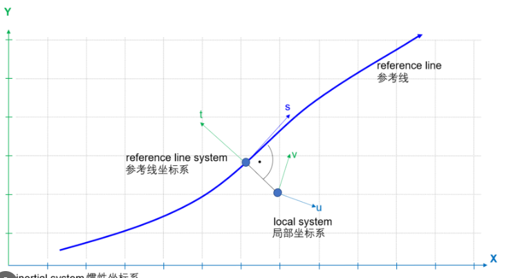

常见问题 (QA)
Q1: 可以使用 OpenDrive 数据进行路径计算吗？
A: 是的，OpenDrive 数据完全支持并非常适合进行路径计算。 作为自动驾驶和高精度地图领域的行业标准，OpenDrive (ASAM OpenDRIVE) 深度集成了几何描述与逻辑拓扑，天然支持全局路径规划与局部车道级路径计算。
支持路径计算的核心机制：
- 完善的拓扑连接（Topological Connectivity）：通过道路 (Road) 与车道 (Lane) 的 `predecessor`/`successor` 以及 `Junction` 逻辑，支持车道级的连续路径搜索。
- 行驶规则与限制（Driving Rules & Restrictions）：内置车道类型、方向、变道许可及限速信息，直接作为寻路算法的权重 (Cost) 与约束。
- 三维空间定位（S-T 坐标系）：基于参考线的 $s-t$ 坐标系与 $x-y-z$ 惯性坐标系的转换，使得从全局 $x-y-z$ 定位到 $s$ 轴向距离的投影转换变得高效且精确。
实际开发中的应用落地：
虽然格式上支持，但因原始 XML 结构复杂，通常建议在开发中：
- 使用解析器（如 libOpenDRIVE 或 Python 脚本）读取 .xodr 文件；
- 提取出拓扑路由图 (Routing Graph)，将车道抽象为边，连接点抽象为顶点；
- 根据长度、限速、转弯成本计算权重；
- 基于构建好的有向图，运行 $A^*$ 或 Dijkstra 等算法进行实时寻路。
Q2: Autoware 为什么不直接使用 OpenDrive 数据进行路径计算，而是需要使用转换后的 LaneLet2 数据进行路径计算？
A: 虽然 OpenDrive 数据信息完备，但 Autoware 的核心架构（尤其是其 Planning 模块）围绕 Lanelet2 格式进行了深度优化，主要得益于 Lanelet2 的轻量级 Primitive 设计、与 Autoware 地图引擎的天然契合度，以及其在多源数据处理中的高计算效率。
Q3: OpenDrive 对路网表达的基本架构是什么？
A: OpenDrive 的基本架构采用分层树状结构，主要由以下核心元素构成，实现了物理空间到逻辑空间的闭环：
- Header (头信息): 定义坐标系、投影信息（GeoReference）及版本。
- Road (道路): 路网的最基本单元。包含 Reference Line (参考线)，是所有几何计算的基准。
- Plan View (平面投影): 定义参考线的几何形状（直线、圆弧、螺旋线等）。
- Elevation Profile (高程信息): 定义参考线在 $z$ 方向上的起伏。
- Lanes (车道层): 将道路切分为多个 LaneSection，每个 Section 包含多条 Lane，定义了车道类型、宽度及行驶规则。
- Junction (交叉口): 复杂连接逻辑的容器，记录不同 Road 之间车道的连接关系 (LaneLink)。
- Objects/Signals (静态物体与标志): 描述交通灯、路标及路边障碍物信息。
Q4: Lanelet2 对路网表达的基本架构是什么？
A: Lanelet2 基于图论与图元 (Primitives) 的思想，采用了一种高度解耦的结构，非常适合现代自动驾驶系统的模块化设计：
- Point (点): 具备 3D 坐标 ($x, y, z$) 的基本几何单位。
- LineString (线串): 由多个 Point 组成的有序序列，通常用于表示车道边界、停止线或路沿。
- Lanelet (车道): 路网的核心单元。由“左边界”、“右边界”两个 LineString 围合而成，包含了车道内部的拓扑关系及交通规则属性。
- Area (区域): 用于描述非车道区域，如路口中心区、停车场或人行广场。
- Regulatory Element (规则元素): Lanelet2 的精华所在，将“物理地图”与“交通规则”解耦。如红绿灯、让行标志、限速标志等作为独立元素，通过关联 (Relation) 作用于特定的 Lanelet 上。
- Topological Map (拓扑地图): 由 Lanelet 构成的有向图。通过 Lanelet 之间的 `left`, `right`, `prev`, `next` 指针，系统可快速推演出车辆可通行的所有路径组合。
Q5: Carla 中的坐标系表达是怎样的？
A: Carla 使用基于 Unreal Engine 的左手坐标系 (Left-handed System)，但在进行高精度地图映射和 ROS2 联动时，通常会转换为符合惯例的右手坐标系。
- 世界坐标系 (World Coordinate System): 基于地图中心，遵循 $X$ 为正前，$Y$ 为正右，$Z$ 为正上的规则（在 Unreal 引擎默认下）。
- 车辆坐标系 (Vehicle Coordinate System): 以车辆质心为原点，遵循 ISO 8855 标准：$X$ 轴指向车辆前进方向，$Y$ 轴指向左侧，$Z$ 轴向上。
- 传感器坐标系 (Sensor Coordinate System): 在安装传感器（如 LiDAR）时，会有一个偏移量 (Transform)，需要根据相机或激光雷达的安装位姿进行坐标变换。
- OpenDRIVE 映射中的坐标转换: 在进行 OpenDRIVE 地图导入时，Carla 会执行必要的坐标系转换，将 UE 的地图坐标映射为 OpenDRIVE 的 $s-t-z$ 空间。

Q6: OSM (OpenStreetMap) 对于道路网络的表达方式是怎样的？
A: OSM (OpenStreetMap) 采用了一种极简的、基于键值对 (Key-Value) 的标签系统来表达地理数据，其路网架构由三个核心图元构成：
- Node (节点): 拥有经纬度 ($lat, lon$) 的单一坐标点。
- Way (路径): 由一系列 Node 组成的有序序列，代表一条道路或区域。
- Relation (关系): 描述复杂结构（如多车道复杂交叉口、公交路线）。
- Tagging (标签系统): 通过添加标签（如 `highway=primary`）赋予图元具体的语义含义。
Q7: 在 RoadRunner 中，使用 CreateScene 命令将 OpenDrive 数据转换为 Scene 并导入 Carla 的主要逻辑是什么？
A: RoadRunner 的核心转换逻辑是将 OpenDrive 的数学拓扑结构实例化为仿真平台可执行的物理与逻辑场景，包括：几何体实例化 (Mesh/Surface)、逻辑场景增强 (交通灯/标识)、材质与物理属性赋能，以及最终符合 Carla 引擎空间坐标系对齐的插件导出。
Q8: 可以直接在 Carla 中设置目的地，然后进行路径规划计算吗？
A: 可以在 Carla 中设置目的地，但这仅限于简单的导航指令，不能替代复杂的 Autoware 路径规划。
- Carla 自带的导航功能: Carla 提供了 `carla.Navigation` 组件，通过 `set_destination` 方法，仿真车辆可以根据内置的 OpenDRIVE 拓扑自动寻找最短路径行驶。这适用于非 Autoware 闭环的独立测试，比如 NPC 车辆生成或基础的车辆逻辑测试。
- Autoware 闭环中的限制: 在与 Autoware 联动时，路径规划必须由 Autoware 的 Planner 模块主导。如果直接在 Carla 中强行设置目的地，会导致 Carla 的 NPC 逻辑与 Autoware 的感知决策发生冲突，进而引发碰撞或逻辑混乱。
- 建议开发流程: 在 Autoware 联动模式下，应禁用 Carla 自带的自动驾驶导航功能，将“目标点下发”的任务完全交由 Autoware 的
Rviz2 或 Goal Pose 接口，通过 ROS2 Topic 发送至 Autoware 的 Mission Planner，从而实现完全可控的闭环测试。
Q9: Carla 自带的导航功能是如何工作的？
A: Carla 的 carla.Navigation 组件通过直接接入底层地图拓扑实现寻路：
- 拓扑索引: 它加载仿真器内置的 OpenDRIVE 地图，将其解析为由“路段(Road)”和“交叉口(Junction)”构成的加权有向图。
- 最短路径算法: 当调用 `set_destination(target_point)` 时，Carla 引擎内部会运行 Dijkstra 算法，基于地图拓扑图从当前车辆所在的路段索引计算到目标位置的最优车道序列。
- 动态更新与引导: 计算出的路径序列会转化为一系列 waypoint 点。在行驶过程中，车辆的控制器（如
BasicAgent 或 BehaviorAgent）会动态对比当前位姿与这些 waypoint 的距离，实时计算油门、刹车和方向盘转角，从而实现基于 OpenDRIVE 的全自动导航。